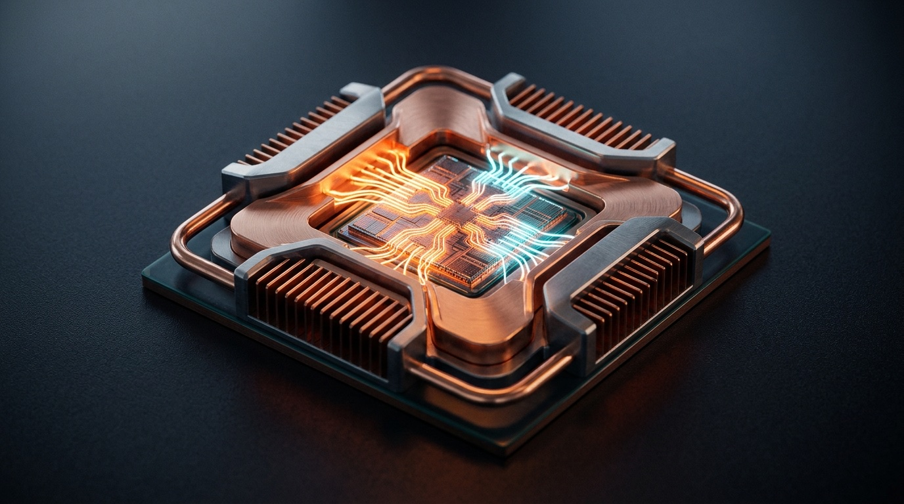

The complete visual handbook to running open weights on your own silicon—mastering GGUF & MLX runtimes, quantization math, Apple Silicon unified memory, zero-cost local embeddings, and hybrid cloud routing.
Ollama • llama.cpp • MLX
Q4_K_M & imatrix Math
Unified RAM & num_ctx
localhost:11434/v1 Swap
Zero-Cost Local Embeddings
Air-Gapped Hybrid Routing

/v1/chat/completions and /v1/embeddings routes so switching local vs. frontier cloud is pure config.
Local inference is not a replacement for frontier cloud models—it is the complementary second engine sitting right under your desk. Mastering the four layers underneath localhost lets you run private workloads for free and diagnose instantly when a local model feels slow or forgetful.
brain.py RAGp. 8FP16 → IQ3_M)p. 5num_ctx Trapp. 6Strict data residency (zero third-party logs), bulk embeddings (millions of docs for $0), air-gapped travel/field work, bounded extraction/summarization, and custom LoRA fine-tuning with pinned weights that never silently deprecate.
Hard multi-step architectural reasoning, massive 100K–1M+ context windows (where local KV caches blow past laptop RAM), and complex 15-tool agent loops where quantized 8B–14B models occasionally drop JSON arguments.
OPENAI_BASE_URL=http://localhost:11434/v1 instead of https://api.openai.com/v1 turns “local vs. cloud” from a multi-week rewrite into a single environment variable.
Most frustration in local AI comes from picking the wrong container format for your chip or pulling a model whose KV cache quietly exceeds usable RAM. Match your runtime and weight size to your metal first.
GGUF vs. Safetensors / MLXGGUF (Universal Single-File Crate)Created by ggml-org/llama.cpp to replace GGML. Packs quantized weights, vocabulary, Jinja chat template, and architecture metadata into one mmap-ready file via convert-hf-to-gguf.py + llama-quantize (published by ggml-org, unsloth, and bartowski).
MLX Safetensors (Apple Silicon Native)Apple's array framework reads 4-bit/8-bit Safetensors repos (mlx-community/*) directly across unified memory. Delivers peak M-series throughput (especially on MoE models), on-device LoRA training, and powers supported Mac models automatically in Ollama 0.19+.
| Runtime | Native Formats | Default Endpoint | Sweet Spot & Engineering Trade-Offs |
|---|---|---|---|
| Ollama CLI + Daemon |
GGUF + MLX (v0.19+) |
localhost:11434/v1 |
Best everyday default. One-command pulls, automatic lifecycle unloading, Modelfile customization, and dual llama.cpp/MLX acceleration. |
llama.cppllama-server / CLI |
GGUF |
127.0.0.1:8080/v1 |
Maximum low-level control & portability. Runs on Metal, CUDA, Vulkan, ROCm, and CPU; exposes granular KV, batch, grammar, and speculative flags. |
Apple MLXmlx_lm.server |
Safetensors (MLX) |
127.0.0.1:8080/v1 |
Peak Mac throughput & local LoRA. Fastest prefill/decode on M1–M4 silicon and native Python/Swift embedding; macOS Apple Silicon only. |
| LM Studio GUI + lms CLI |
GGUF & MLX |
localhost:1234/v1 |
Visual exploration & hardware fit checks. Built-in Hugging Face browser estimates GPU fit before download and runs a headless local server. |
| vLLM Multi-User GPU |
Safetensors (AWQ/FP8) |
localhost:8000/v1 |
Team GPU workstation / Linux server. PagedAttention shines under high parallel concurrency on NVIDIA/AMD GPUs; overkill for single laptops. |
| RAM Tier | Usable AI Budget | Comfortable Daily Sweet Spot | Stretch (Short Ctx) | Avoid |
|---|---|---|---|---|
| 16 GB | ~10–11 GB |
4B–8B Q4_K_M / Q5_K_M (~40–55 tok/s) + embedder |
14B Q4_K_M (≤4K) |
27B–32B+ |
| 32 GB | ~21–24 GB |
14B Q6_K or 30B MoE Q4_K_M (~25–45 tok/s) |
32B Q4_K_M (8K) |
70B Dense |
| 64 GB | ~44–48 GB |
32B Q5_K_M (32K) or 70B Q4_K_M (~14–22 tok/s) |
70B Q5_K_M |
120B+ Dense |
| 128 GB | ~92–100 GB |
70B Q8_0 + resident 8B coder + embedder + 64K ctx |
120B+ Q4 / MoEs |
FP16 405B |
4–8 GB before weights load. Directional tok/s ranges reflect September 2026 M-series estimates—always verify on your own chip via Activity Monitor and llama-bench.
Never guess whether your model is running on the GPU, truncating your prompt, or spilling into slow CPU swap. Here is how to read every critical signal across ollama ps, llama-server logs, and your active Modelfile.
PROCESSOR): Must read 100% GPU for crisp speed. Even a 85% GPU / 15% CPU split slashes generation throughput by 3–5x.CONTEXT): Confirms the live num_ctx slot (16384). Any prompt longer than this number is silently clipped from the front!UNTIL): Governed by OLLAMA_KEEP_ALIVE. Shows when idle weights will evict from RAM (or Forever when pinned with -1).llama.cpp Metal or Apple MLX mapped the file and prints exact bits-per-weight (4.83 bpw).q8_0 KV cache with Flash Attention cuts context memory in half while preserving output fidelity.pp) vs. Decode (tg): Separates compute-bound prompt reading (822 tok/s) from memory-bandwidth-bound token writing (23 tok/s).Modelfile: Bakes your verified num_ctx, GPU offload, and system prompt into a versionable local alias via ollama create.
ollama ps alongside macOS Activity Monitor → Memory Pressure. If Memory Pressure stays green and PROCESSOR shows 100% GPU, your model is running at full silicon bandwidth; yellow/red pressure means SSD swap is throttling you.
FP16 Down to IQ3_M
A 32-billion-parameter model occupies 64 GB in raw 16-bit floats—impossible on a 32 GB laptop. Quantization compresses those weights down toward 4–5 bits per parameter, shrinking the file to ~19.5 GB while retaining roughly 95–97% of reference capability.
imatrix-calibrated low-bit rescue for tight RAM.
Modern K-quants (Q4_K_S, Q4_K_M, Q4_K_L) do not crush every tensor uniformly. They group weights into super-blocks with shared floating-point scales and keep sensitive attention/output layers at 6-bit or 8-bit precision (controlled by _S/_M/_L). Below 4 bits, IQ quants (e.g., IQ4_XS, IQ3_M) run a calibration corpus through an importance matrix (imatrix) during quantization to protect the specific weights that spike activations most.
| Quant Tag | Avg. bpw | 8B / 32B Size | Quality Rule* | When to Pick It |
|---|---|---|---|---|
FP16 / BF16 |
16.0 |
16 GB / 64 GB |
100% (Ref) |
Reference yardstick & source input for llama-quantize; rarely served locally. |
Q8_0 |
~8.5 |
8.5 GB / 34 GB |
~99%+ |
Near-lossless ceiling when you have abundant RAM and want exact reference parity. |
Q6_K / Q5_K_M |
~6.6 / 5.7 |
5.8–6.6 / 23–26 GB |
~97–99% |
Upgrade pick for coding, strict JSON schemas, and digit-accurate extraction. |
Q4_K_M |
~4.8 |
4.9 GB / 19.5 GB |
~95–97% |
Universal default (and Ollama's registry default). Best size, speed & quality trade. |
IQ3_M / Q3_K_M |
~3.5 |
3.6 GB / 14.2 GB |
~89–92% |
Squeezing a larger parameter class (e.g., 70B onto 36–48 GB); always prefer imatrix IQ. |
Q2_K |
~2.6 |
2.8 GB / 11 GB |
~80–85% |
Emergency curiosity only; drop down to a smaller model at Q4_K_M instead! |
Q4_K_M. A crisp 14B @ Q5_K_M almost always beats a lobotomized 32B @ Q2_K!
num_ctx TrapOn Apple Silicon, CPU, GPU, and Neural Engine cores share a single high-bandwidth memory pool without slow PCIe copies—yet that shared pool must simultaneously hold macOS, your IDE, model weights, and a KV cache that grows linearly with every token.
2 × layers × kv_heads × head_dim × bytes per context token.num_ctx TrapTo protect 8–16 GB laptops, local servers often default num_ctx to 2048 or 4096 tokens—even if the model card advertises 128K! Feed a 9,000-token file into a 4096 slot and the server silently drops the oldest 5,000 tokens without raising an error.
Blindly setting num_ctx 131072 in FP16 (2 bytes/val) allocates 8–16+ GB of KV buffer overnight, pushing unified memory onto SSD swap (~2 tok/s). Fix: right-size num_ctx (8K–32K) and set OLLAMA_KV_CACHE_TYPE=q8_0 (1 byte/val, 50% smaller!).
Modelfile)
Once ollama serve is running, you manage weights like Docker images from your terminal and call them from Python or TypeScript using the exact same official openai client you already ship in production.
| Command / Env Variable | What It Does & Pro Engineering Habit |
|---|---|
ollama pull <model> • ollama show <model> |
Downloads weights and prints exact quant, parameter count, default num_ctx, and Jinja template. Always inspect with show! |
ollama create my-coder -f Modelfile |
Compiles a zero-copy alias baking in your custom num_ctx, num_gpu, and system prompt without duplicating gigabytes on disk. |
ollama ps • ollama stop <model> |
Shows live RAM/VRAM split and immediately evicts a heavy model when you need memory back for Docker or builds. |
OLLAMA_KEEP_ALIVE=30m (0 or -1) |
Controls residency timeout (default 5m). Pass keep_alive: 0 after batch jobs to free RAM instantly, or -1 to pin all day. |
ollama list • ollama rm <model> |
Audits disk footprint under ~/.ollama/models. Ten forgotten 32B experiments silently burn 200+ GB of SSD! |
# Python: pip install openai
import os
from openai import OpenAI
client = OpenAI(
base_url=os.getenv("LLM_BASE_URL", "http://localhost:11434/v1"),
api_key=os.getenv("OPENAI_API_KEY", "ollama"), # ignored locally
)
stream = client.chat.completions.create(
model=os.getenv("LLM_MODEL", "qwen3.5:4b"), # verify via ollama list
messages=[{"role": "user", "content": "Summarize diff risks."}],
temperature=0.2,
stream=True,
)
for chunk in stream:
print(chunk.choices[0].delta.content or "", end="", flush=True)
// TypeScript: identical swap in official 'openai' or Vercel AI SDK
// const client = new OpenAI({ baseURL: "http://localhost:11434/v1", apiKey: "ollama" });# Constrain token sampling to a strict Pydantic / JSON Schema
from pydantic import BaseModel
from openai import OpenAI
class CommitAudit(BaseModel):
risk_level: str # "low" | "medium" | "high"
touches_auth: bool
summary: str
client = OpenAI(base_url="http://localhost:11434/v1", api_key="ollama")
parsed = client.beta.chat.completions.parse(
model="qwen-local-16k",
messages=[
{"role": "system", "content": "Extract structured audit JSON."},
{"role": "user", "content": "Modified requireRole() in api/auth.ts"},
],
response_format=CommitAudit,
temperature=0.0,
)
audit: CommitAudit = parsed.choices[0].message.parsedresponse_format JSON Schema compiles a token-level grammar mask inside llama.cpp / Ollama so invalid syntax tokens have zero probability of being sampled.
brain.py RAG
Local embeddings are the single highest-ROI workload in on-device AI: encoder models weigh only 270 MB–1.2 GB, embed thousands of chunks for $0.00, and never break your vector database when a cloud vendor retires an API model.
ollama show)| Encoder Model | Params / Size | Dims / Max Ctx | Best Use Case & Prefix / Truncation Gotcha |
|---|---|---|---|
nomic-embed-text |
137M / ~274 MB |
768d / 8,192 |
Best everyday English default. Prepend search_document: and search_query: task prefixes for peak recall! |
mxbai-embed-large |
335M / ~670 MB |
1024d / 512 |
Sharp short-passage accuracy—watch the 512-token cap! Chunk under ~350 words so tails never clip. |
bge-m3 |
567M / ~1.2 GB |
1024d / 8,192 |
Multilingual & dense+lexical powerhouse across 100+ languages and long technical Markdown files. |
embeddinggemma |
300M / ~622 MB |
768d / 2,048 |
Compact Google open-weight on-device encoder; pairs cleanly with Matryoshka dimension truncation & mobile RAG. |
Reading your input before token #1 appears. Pasting 40K raw tokens stalls laptops for minutes. Tune num_batch (512–1024), turn on Flash Attention, and retrieve top-4 RAG chunks instead of whole files.
Every output token reads the entire model from RAM (Max tok/s ≈ Bandwidth / Weight GB). Offload 100% to GPU/MLX, cap CPU num_thread to P-cores, and benchmark honestly via llama-bench -p 512 -n 128.
brain.py — Zero Network Egress)import math, pathlib, sys
from openai import OpenAI
client = OpenAI(base_url="http://localhost:11434/v1", api_key="ollama")
EMBED_MODEL, CHAT_MODEL = "nomic-embed-text", "qwen3.5:4b" # verify installed tags via ollama list
def chunk_words(text: str, size: int = 450, overlap: int = 60) -> list[str]:
w = text.split()
return [" ".join(w[i:i + size]) for i in range(0, len(w), size - overlap)] if w else []
def embed(texts: list[str], prefix: str) -> list[list[float]]:
res = client.embeddings.create(model=EMBED_MODEL, input=[f"{prefix}{t}" for t in texts])
return [item.embedding for item in res.data]
def cosine(a: list[float], b: list[float]) -> float:
na, nb = math.sqrt(sum(x * x for x in a)), math.sqrt(sum(y * y for y in b))
return sum(x * y for x, y in zip(a, b)) / (na * nb) if (na and nb) else 0.0
chunks = [c for p in pathlib.Path("~/notes").expanduser().rglob("*.md") for c in chunk_words(p.read_text(errors="ignore"))]
vecs = embed(chunks, prefix="search_document: ") # swap in sqlite-vec / LanceDB to persist on disk
q = " ".join(sys.argv[1:]) or "What did I write about KV cache sizing?"
qv = embed([q], prefix="search_query: ")[0]
top_ctx = "\n---\n".join(c for c, _ in sorted(zip(chunks, vecs), key=lambda cv: cosine(qv, cv[1]), reverse=True)[:4])
ans = client.chat.completions.create(
model=CHAT_MODEL, temperature=0.1,
messages=[{"role": "system", "content": "Answer strictly from Context. Say if missing."},
{"role": "user", "content": f"Context:\n{top_ctx}\n\nQuestion: {q}"}],
)
print(ans.choices[0].message.content)
Drop these five battle-tested configurations straight into your shell or Python service to lock in memory-safe context windows, cloud fallback routing, deterministic schemas, and raw llama-server speed.
| Recipe & Goal | Copy-Paste Command / Production Snippet |
|---|---|
1. Tuned Modelfile + q8_0 KV CacheEliminates silent 4K truncation & halves KV RAM |
launchctl setenv OLLAMA_FLASH_ATTENTION 1 && launchctl setenv OLLAMA_KV_CACHE_TYPE q8_0Save Modelfile: FROM qwen2.5-coder:14b • PARAMETER num_ctx 16384 • PARAMETER num_gpu 999 • PARAMETER temperature 0.1Build & verify: ollama create coder-16k -f Modelfile && ollama show coder-16k
|
| 2. Drop-In Cloud ↔ Local Client Router One factory routes by sensitivity or task tier |
def get_llm(tier="local"): if tier == "local": return OpenAI(base_url="http://127.0.0.1:11434/v1", api_key="ollama"), "coder-16k" return OpenAI(base_url="https://api.openai.com/v1", api_key=os.environ["OPENAI_API_KEY"]), "gpt-5"
|
| 3. Local JSON-Schema Extractor Zero markdown-fence failures on 4B–14B weights |
curl http://127.0.0.1:11434/api/chat -d '{"model":"coder-16k","stream":false,"options":{"temperature":0},"messages":[{"role":"user","content":"Invoice #409 total $84.50 USD"}],"format":{"type":"object","properties":{"id":{"type":"string"},"usd":{"type":"number"}},"required":["id","usd"]}}'
|
| 4. Batched Local Embedding Indexer Embeds 100s of docs/sec w/ asymmetric prefixes |
batches = [docs[i:i+64] for i in range(0, len(docs), 64)] # stay under model token cap per itemvecs = [d.embedding for b in batches for d in client.embeddings.create( model="nomic-embed-text", input=[f"search_document: {t[:16000]}" for t in b]).data]
|
5. Production llama-server LaunchDirect C++ engine w/ Jinja, Flash-Attn & quantized KV |
llama-server -hf ggml-org/Qwen2.5-Coder-14B-Instruct-Q4_K_M-GGUF -ngl 999 -c 16384 -b 1024 --flash-attn -ctk q8_0 -ctv q8_0 --jinja --host 127.0.0.1 --port 8080 # confirm flags on your build via llama-server --help
|
llama-benchllama-bench -m model.gguf -p 512 -n 128. Comparing controlled pp512 and tg128 runs side by side exposes real hardware wins in 20 seconds.
du -sh ~/.ollama/models ~/.cache/huggingface once a month. Prune retired models via ollama rm <tag> so stale 20 GB weight blobs never starve macOS virtual memory headroom.
The sharpest engineers in 2026 rarely run 100% cloud or 100% local. They wire a Hybrid Split: free, instant, private local models handle high-frequency autocomplete, repo indexing, and log triage, while frontier cloud APIs step in only for deep multi-file architecture.
| Agent Role | Recommended Engine | Why This Split Wins |
|---|---|---|
| Tab Autocomplete (FIM) | Local 1.5B–3B Coder Q4/Q8 |
Fires on every keystroke; local silicon delivers 65–90 tok/s with sub-100ms latency and zero API rate limits. |
| Codebase Semantic Index | Local nomic-embed-text |
Re-indexes thousands of edited files continuously on branch switches without uploading proprietary source trees. |
| Log Triage & PII Scrub | Local 8B–14B Q5_K_M |
Summarizes 5,000-line test failures and strips customer tokens/emails locally before any escalation leaves the machine. |
| Hard Multi-File Plan/Edit | Frontier Cloud (or 32B–70B air-gapped) |
Reserves paid API budget strictly for high-leverage system design, subtle race conditions, and complex tool chains. |
# 1. Continue (~/.continue/config.yaml) — Local FIM + Local RAG + Hybrid Chat
models:
- name: Local Qwen Autocomplete
provider: ollama
model: qwen2.5-coder:1.5b
roles: [autocomplete]
- name: Local 16K Coder (Air-Gapped Chat)
provider: ollama
model: coder-16k # custom Modelfile with num_ctx 16384!
roles: [chat, edit]
- name: Local Repo Embedder
provider: ollama
model: nomic-embed-text
roles: [embed]
# 2. Aider & OpenCode CLI — Point at Loopback (Always pair with an ≥16K num_ctx alias!)
export OLLAMA_API_BASE=http://127.0.0.1:11434
aider --model ollama_chat/coder-16k --edit-format whole # 'whole' or 'diff' suits 14B-32B best
# In OpenCode (~/.config/opencode/opencode.json): add provider w/ baseURL "http://127.0.0.1:11434/v1"0.0.0.0 Unprotected!OLLAMA_HOST=127.0.0.1:11434 (and llama-server --host 127.0.0.1) bound strictly to loopback. If you expose a desktop GPU to your laptop across a LAN, tunnel over Tailscale / WireGuard or an authenticated reverse proxy—never open raw port 11434 on café or office Wi-Fi.
Watch how local encoders, quantized local chat models, policy gates, and optional cloud escalation combine into a fast, privacy-preserving engineering assistant that handles 80% of daily queries for $0.00.
File watchers re-chunk changed Markdown, PDFs, and code into sqlite-vec or LanceDB via nomic-embed-text. Re-indexing 50,000 chunks overnight costs pennies of electricity and leaks zero customer bytes.
A resident 8B–14B model answers factual lookups directly from retrieved chunks, scores its own confidence via JSON schema, and redacts API keys, names, or account IDs if escalation is required.
Files tagged confidential never cross the gate. For non-sensitive hard bugs, local triage shrinks 25,000 tokens of raw logs into a crisp 600-token reproducer—slashing cloud API spend by 90%+.
Because Stages 3 and 5 share the identical OpenAI SDK interface, boarding an airplane or losing Wi-Fi simply flips the escalation target to your heaviest local model instead of crashing your workflow.
lsof -i -P | grep ollama) and run your full pipeline end to end. Watch out for telemetry flags in third-party wrapper UIs!
Keep this page handy whenever a local model crawls, forgets instructions, or mangles JSON. Nearly every local AI failure traces back to one of seven mechanical root causes—each solvable in seconds.
| Symptom You Observe | Root Cause & Immediate 10-Second Fix |
|---|---|
| 1. Model ignores early rules or RAG chunks | Silent context truncation: prompt exceeded default 2048/4096 num_ctx. Check ollama show <model>, bake PARAMETER num_ctx 16384 into a Modelfile, and check embedder caps (mxbai = 512). |
2. Speed collapses to 1–3 tok/s; Mac lags |
SSD swap thrashing: weights + KV cache exceeded wired unified memory. Enable OLLAMA_KV_CACHE_TYPE=q8_0, trim num_ctx, unload other models (ollama ps), or drop from Q6_K to Q4_K_M. |
3. ollama ps shows 0% GPU (CPU crawl) |
Failed GPU offload: layer count overflowed GPU budget or Metal/CUDA backend stalled. Pass PARAMETER num_gpu 999 (-ngl 999) and verify total footprint fits inside ~70% of nominal RAM. |
| 4. First token takes 45–90 seconds to appear | Compute-bound prefill (pp) wall: feeding 30K+ raw tokens per turn. Turn on OLLAMA_FLASH_ATTENTION=1, raise num_batch (512–1024), and retrieve concise top-k RAG chunks instead of whole files. |
| 5. Broken JSON or dropped tool calls | Over-quantization or chat-template mismatch: avoid Q2/Q3 for structured work; step up to Q5_K_M/Q6_K, pass --jinja in llama-server, and enforce grammar-masked response_format schemas. |
| 6. Local RAG returns irrelevant chunks | Missing task prefixes or vector drift: prepend search_document: / search_query: when required (nomic-embed-text), and always rebuild the entire index whenever you change embedding models! |
| 7. 10-sec reload pauses OR 200 GB full disk | Lifecycle & storage drift: 5m default keep_alive unloads weights between edits; set OLLAMA_KEEP_ALIVE=30m during coding sessions and run ollama list + ollama rm weekly to reclaim SSD space. |
ollama show <model> to confirm exact quant, max context, and chat template.temperature=0.q8_0 KV cache + 2 GB overhead sit comfortably inside 70% RAM (100% GPU).num_ctx Pinned: Saved a custom Modelfile so 2K/4K defaults never silently clip prompts.127.0.0.1 and client code routes via LLM_BASE_URL config!